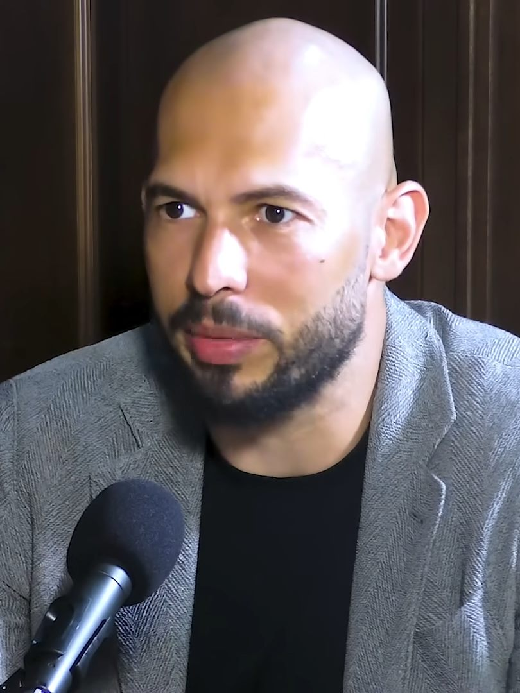

앤드루 테이트 형제, 마이애미서 체포… 영국서 38개 혐의 추가
인플루언서 앤드루 테이트와 동생 트리스탄 테이트가 미국 마이애미에서 체포됐다. 영국 당국이 이들에게 38개의 새로운 혐의를 제기한 데 따른 것이다.
전금문 기자 · 2026.07.21
橋국제

앤드루 테이트와 트리스탄 테이트 형제가 마이애미에서 체포됐다고 외신들이 전했다. 영국 당국이 38개의 새 혐의를 적용한 뒤 이뤄진 조치다.
광고 문의 · 300×250테이트 형제는 온라인에서 큰 영향력을 지닌 인물로, 여러 나라에서 법적 다툼에 휘말려 왔다. 이번 체포는 국경을 넘는 사법 공조가 어떻게 작동하는지를 보여주는 사례다.
영향력이 큰 인물일수록 그의 언행과 사업이 사회에 미치는 파장도 크다. 사법 절차는 유무죄를 가리는 과정이며, 결과가 나오기 전까지는 무죄 추정의 원칙이 적용된다.
이번 사안은 여러 나라의 수사·기소·인도 절차가 얽혀 있어 결론까지 시간이 걸릴 수 있다. 각 절차에서 사실관계가 어떻게 확정되는지가 관건이다.
華橋時報는 유명인의 사건을 선정적으로 다루지 않으며, 사법 절차의 결과를 예단하지 않는다. 이 기사는 사실 전달을 목적으로 하며, 피해자가 있다면 그 권리와 존엄이 우선되어야 함을 밝힌다.
출처·참고 (사실 확인용 — 본문은 직접 재작성)
· BBC
· AP
· BBC
· AP